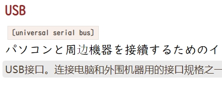

0
本文以《新世纪日汉双解大辞典》为例，介绍一种辞典文本错字的检测方法。
1
近日找寻日文辞典，下载《新世纪日汉双解大辞典》后，自行改写CSS样式，变更日文字体为教科书体（UD デジタル 教科書体 N-R，Windows 10 自带字体），然而后续检查中发现个别文字字体样式有异，如图中「边」字。

原因何在？首先需要了解字体显示的回退机制（fallback）：在网页中，如果某个字符在CSS指定的字体中不存在，那么排版引擎将根据内置的预设字体作为后备显示方案。
此处，CSS样式指定的日文字体仅包含日文汉字，无法显示作为中文简体的「边」字，由于回退机制，排版引擎便以衬线字体展示，而教科书体属于手书字体，与衬线字体外观差异较大，因此十分显眼。
2
受此启发，想到一种辞典文字错误检测方法：可将日文字体所含字符的码点（code point）汇总成表，利用程序检测辞典中每个日文字符，若无法在汇总表中找到，则说明该字符可能不属于日文文字系统。
另，网络上有民间总结的日文字符汇总7000余，也可直接制成汇总表，但教科书体所含字符数更多，有8000余，且感觉上更正式和规范，因此选用后者。
以 python 为例，制表代码如下
from fontTools.ttLib import TTFont
def get_table():
code_table = set()
fontpath = 'UDDigiKyokashoN-R.ttc'
font = TTFont(fontpath, fontNumber=0)
for cmap in font['cmap'].tables:
code_table.update(cmap.cmap.keys())
return code_table
3
实际执行中需要忽略一些特殊字符，虽然它们既不在字体中，也不属于日文字符，但是在辞典中大致是正常使用（粗看，涉及词条过多，无法一一校对）。
已忽略的特殊字符如下：
➪ © ® ¯ Å Á Æ Ø ã å æ ð õ ø ý ÿ ā ć Č č Ē ē ę ě ğ Ī ī İ Ł ł ń ň ŋ Ō ō œ ř Ś ś ş Š š ū ź ż ž ǎ ɔ ɡ ɦ ʃ ʒ ʔ ː ̣ ς ḍ Ḥ ḥ ṃ ṅ ṇ Ṛ ṛ ṣ ṭ Ẓ ẓ ộ ℥ ∶ ∼ ⋅ ⋯ ◦ ♩ ♮ ⚊ ⚋ ⺗ ⺤ ⺥ ⺩ ⺿ 〻 〽 ㊜ ㋐ ㋑
最终，扫描出异常字符587个，涉及异常字符的词条1756个。